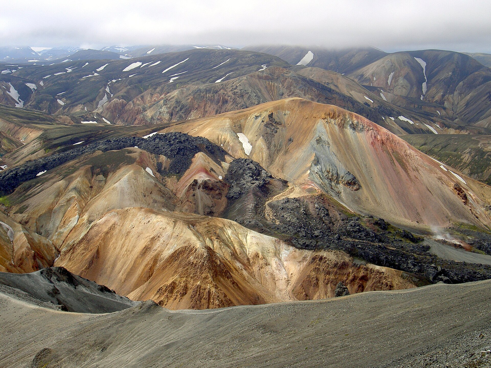
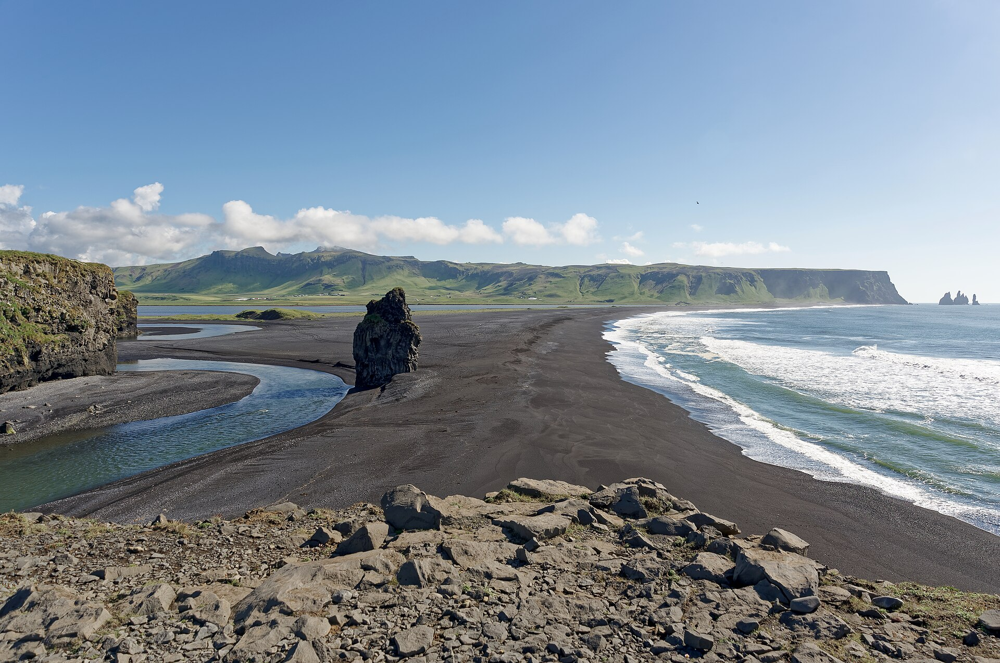
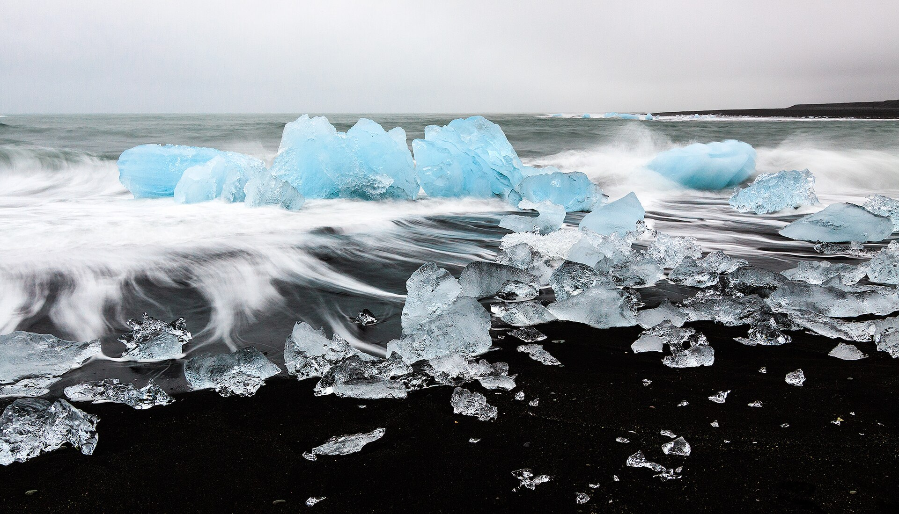

9.24 雷克雅未克 → 黄金圈 → Hella / Flúðir / Selfoss
一早取车出发。建议按辛格维利尔、间歇泉、黄金瀑布、Kerið 火山口推进。晚上住南部内陆，方便第二天去兰德曼纳。
方案B · Iceland · 2026.09.24 – 09.29
为 2 女 1 男、单主驾为主、油车自驾设计。目标是保留兰德曼纳高地和 Vik 集合的卡特拉冰川徒步，同时避免每天都在赶路。
推荐走“黄金圈 + 兰德曼纳高地 + 南岸 + 卡特拉 + 冰河湖/钻石沙滩”的慢节奏路线。不建议这 6 天去米湖、东峡湾、赫本或完整斯奈山自驾，因为会显著增加主驾疲劳，也会压缩自由摄影时间。
9 月底的高地秋色、彩色流纹岩山、熔岩地貌差异感最强。建议保留，但交通方式要谨慎。
15:00 Vik 集合去卡特拉后，当晚住 Vik 是合理的，不建议结束后继续东进。
风景很好，但对 6 天且有高地和冰川活动的行程来说太远，会牺牲体验质量。
一早取车出发。建议按辛格维利尔、间歇泉、黄金瀑布、Kerið 火山口推进。晚上住南部内陆，方便第二天去兰德曼纳。
保留两个选择：A 自驾到集合点参加 11:30 一日游；B 改成带交通团。以你们的驾驶结构和油车条件，我更推荐 B。
上午看塞里雅兰瀑布、斯科加瀑布，午后抵达 Vik。14:20 左右到集合点，15:00 跟团去卡特拉。晚上住已订的 Vik 酒店。
早出发，把冰河湖和钻石沙滩留在白天。Skaftafell 可短停，不建议再安排长徒步。晚上住教堂镇，降低 9.28 回程压力。
上午看羽毛峡谷，回程补黑沙滩或 Dyrhólaey。下午慢慢回雷克雅未克，避免天黑后还在长距离驾驶。
三人可一起，也可分开。优先考虑不自驾的一日团、温泉或 citywalk，给 9.30 离境的人留体力和安全余量。
地图线条为行程规划示意，不是逐路口导航。实际路线请以 Google Maps 和当天 road.is 路况为准。




| 选项 | 适合度 | 优点 | 风险/代价 | 我的建议 |
|---|---|---|---|---|
| 保留 11:30 meet on location，自驾到集合点 | 低到中 | 时间自由，订单不用改；如果车和路况都合适，成本可能更低。 | 必须确认租车允许走 F 路，通常需要 4x4；9 月底高地天气和路况不稳定，主驾压力大。 | 只有在确认车辆、保险、F 路开放、无涉水压力时才考虑。 |
| 改成带交通的一日团 | 高 | 主驾休息，风险低；不用自己处理高地路况，体验更放松。 | 价格可能更高；集合点/接送点和时间需要重新匹配住宿。 | 最推荐。尤其你们是一名主驾为主，且后面还有卡特拉和南岸长线。 |
| 住宿地 | 优势 | 劣势 | 适合情况 |
|---|---|---|---|
| Hella | 最均衡，去高地和第二天往 Vik 都顺；小镇安静，停车方便。 | 餐饮和超市选择少于 Selfoss。 | 我的首选，适合 9.24、9.25 连住。 |
| Flúðir | 靠近黄金圈内侧，有温泉氛围；去高地位置也不错。 | 第二天去 Vik 会比 Hella 稍绕；补给不如 Selfoss。 | 想住得更乡野、更安静时选。 |
| Selfoss | 补给最强，超市、餐饮、加油都方便；住宿选择多。 | 去兰德曼和去 Vik 都会多一点路程；城镇感更强。 | 如果你们想稳妥补给、住宿性价比好，选它。 |
| Vik | 最适合 9.26 卡特拉集合；黑沙滩和 Dyrhólaey 很方便。 | 不适合作为 9.25 兰德曼基地，从这里去高地很折腾。 | 只建议 9.26 住，正好你们已经订了。 |
| 方案 | 优点 | 劣势 | 适合谁 |
|---|---|---|---|
| 雷市 citywalk + Sky Lagoon | 最轻松，完全不折腾；适合整理照片、休息、吃饭、买纪念品。 | 自然风景增量较少。 | 适合 9.30 要离开的两人，或前几天遇到大风雨后恢复。 |
| Reykjanes 半岛 + Blue Lagoon / Sky Lagoon 一日团 | 路程短，地热、熔岩、海岸和温泉都能补上；离机场方向也近。 | 景观震撼度不如斯奈山，但更稳。 | 三人一起最推荐的收尾方案。 |
| 斯奈山半岛一日团 | 风景最丰富，有草帽山、海岸、黑教堂、火山冰川。 | 团时长通常很长，坐车时间多；9.30 离境前一天会比较累。 | 适合体力很好、想多看一个大区域的人；三人也可分开。 |
| 地点 | 建议做什么 |
|---|---|
| 雷克雅未克 | 9.24 出发前大采购：水、零食、简餐、防水外套、手套、保暖层、移动电源。 |
| Selfoss | 南部最稳的补给点，适合采购、加油、买药品和备用食品。 |
| Hella / Hvolsvöllur | 高地前后、南岸出发前后加油和咖啡休息。 |
| Vik | 9.26 午餐、加油、卡特拉集合前休整；也是黑沙滩和 Dyrhólaey 的基地。 |
| Kirkjubæjarklaustur | 9.27/9.28 中转补给点，适合降低冰河湖往返压力。 |
| 冰河湖附近 | 只当景点，不依赖补给；提前带好水、热饮和食物。 |